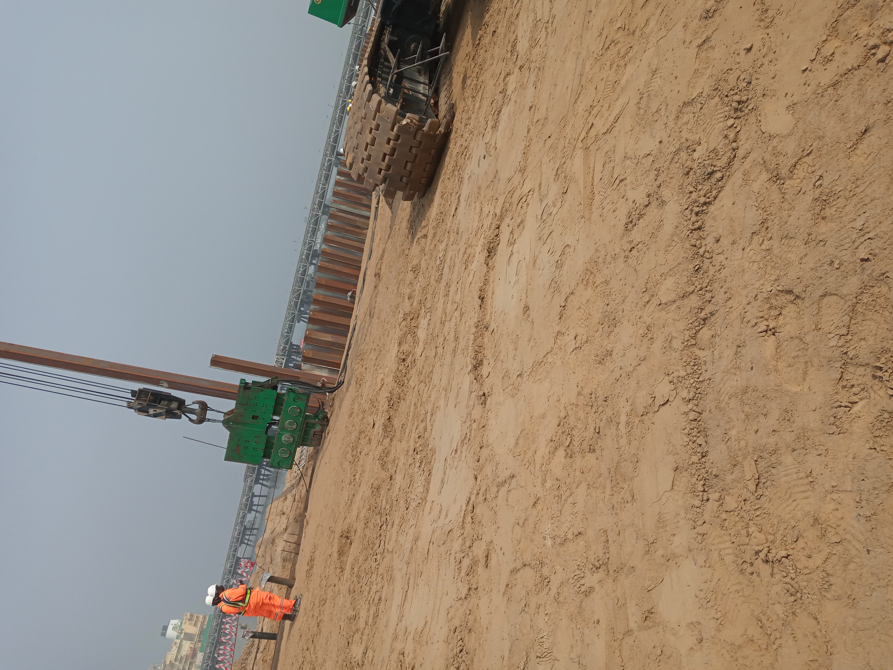

Project Overview
The FAB Refurbishment Works project involved the engineering, procurement, and construction of a new quay wall and associated marine structures to refurbish the former Aggregate Berth (FAB) area. The objective was to establish a modern offloading facility to support the delivery of materials for the ongoing NLNG Train 7 development. Works included the installation of new sheet pile quay and anchor walls, construction of a reinforced concrete capping beam and Ro-Ro barge ramps, shore protection at the northern end of the quay, and site stabilization of the adjacent loading/offloading platform. Additional works comprised the design and construction of a creek crossing and associated drainage infrastructure to ensure continuous stormwater flow and access to the site.
The project was successfully completed, providing a safe and stable marine facility for material offloading and logistics support to ongoing operations.
My Role & Key Contributions
- Supported the Project Manager in the preparation of method statements, constructability reviews, and coordination with the client and stakeholders.
- Participated in technical documentation, ensuring compliance with project specifications and marine construction standards.
- Assisted in progress monitoring, daily and weekly reporting, and verification of executed works.
- Involved in site supervision during quay wall, capping beam, and shore protection activities, maintaining adherence to safety and quality requirements.
- Contributed to effective interface management between design, procurement, and construction teams to ensure seamless project execution.
Gallery

